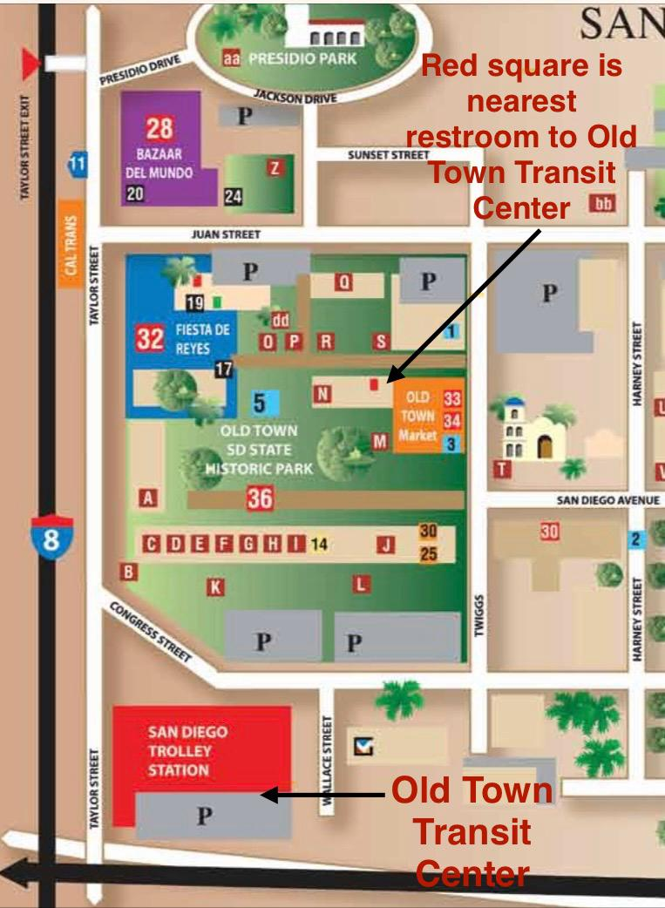

Otèl Abòdab ki tou pre
EZ 8 Motel nan 4747 Pacific Hwy, San Diego, CA 92110
- 5 minit mache soti nan Old Town Transit Station
- 2 Kabann: $121 pou chak swa
- 1 Kabann: $112 pou chak swa
- Kapasite: 4-5 pou chak chanm
- Chanm fimen ak chanm ki pa fimen disponib
- Pa gen Depo
- Bezwen: Paspò/ID Peyi
Twalèt ki tou pre

Jwenn Lajan Kach
-
Ki pi pre Western Union se andedan yon Walgreens nan 3005 Midway Dr San Diego CA 92110-4502
- 15 minit mache soti nan Old Town Transit Center (0.96 kilomèt oswa 0.53 mil)
- Telefòn: +1 619-221-0834
- Orè: 24/7
- Limit peman maksimòm se $300
- Bezwen: Non, Nimewo Telefòn moun k ap voye a, ak kantite lajan k ap resevwa
- Ou dwe montre Paspò/IDantifikasyon Peyi a pou w resevwa lajan
-
MoneyGram ki pi pre se andedan yon CVS nan 3327 Rosecrans Street San Diego CA 92110-4223
- 20 minit mache soti nan Old Town Transit Center (1.5 kilomèt oswa 0.9 mil)
- Telefòn: +1 (619) 225-9691
- Orè: 7 AM jiska 10 PM
Enfòmasyon sou transpò piblik
Sit entènèt transpò piblik San Diego
Klike pou w wè yon kat jeyografik sistèm Trolley San Diego